Table of Contents
1 はじめに
ブログタイトルにBrooklineと付けているのに、そう言えばBrooklineについてのエントリーをまだ書いていませんでした。今回は、私の住むMassachusetts州Brookline市を、Coolidge Corner付近を中心に紹介します。
2 Brooklineってこんなところ
BrooklineはBostonの西に隣接する郊外の市で、とあるランキングサイトによると、#1 in best places to live in Massachusetts, overall grade A+という、特に家族連れに大人気のところです。
典型的な秋のBrookline住宅街。日本の郊外ではあまり見られない、立派な落葉樹の木がたくさんあります。 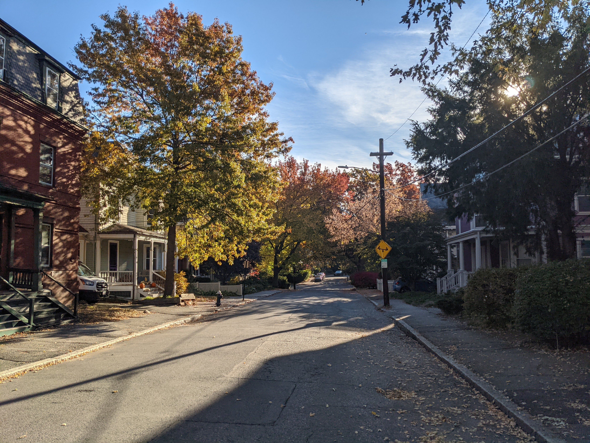
こちらは一方通行の細い道。ゴミ回収の日なので、回収用のビンが歩道に並んでいます。ブルーがリサイクル、黒がその他です。「燃えるゴミ」というカテゴリーは無し。 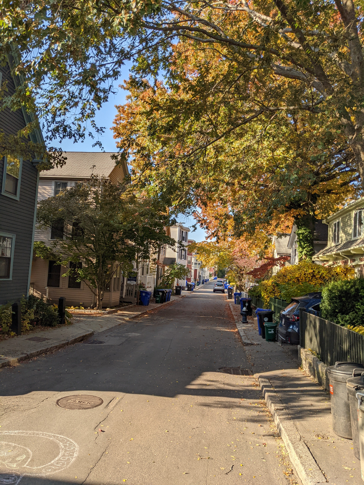
都会と郊外の両方の雰囲気を持っていて、Coolidge Corner駅周辺は日本で較べると東京の表参道のようなところ、と言ったら言い過ぎでしょうか。
比較的栄えているCoolidge Corner駅交差点。雪国なので、信号機が縦に並んでいます。 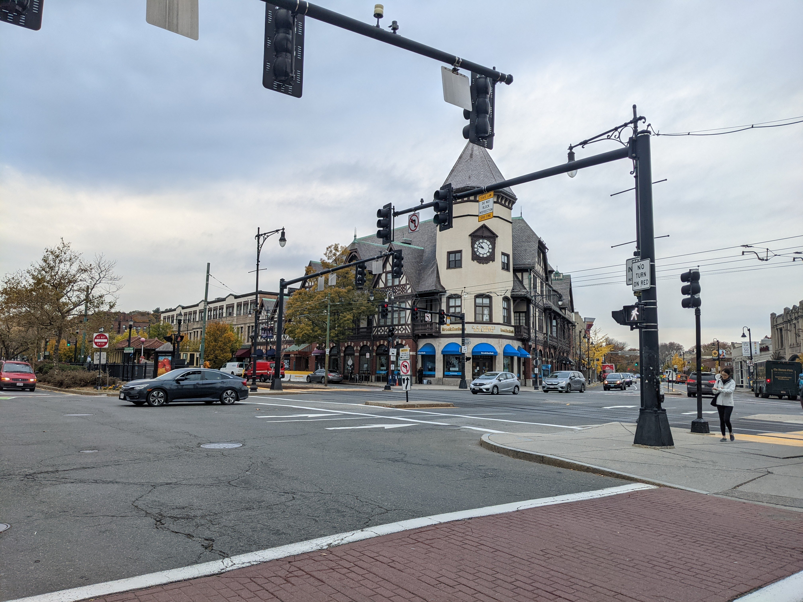
人種別では、白人が7割、アジア系が2割弱となっていて、黒人とヒスパニック比率が低いです。街を歩いている感じでも、白人と、次いでアジア系が多いです。外見からはあまりわかりませんが、子供の友達を見るとユダヤ系が多い印象です。
3 日本人にも人気
Brooklineは、英語のしゃべれない日本人の受け入れ体制がしっかりしていて、初めてアメリカに来る子供を持つ日本人家族はBrooklineを選択することが多いようです。夫婦のみや赤ちゃん連れの家族だとCambridge市を選ぶ場合が多いですかね。
街を歩いていると、たまに日本語が聞こえてきます。私が毎週通っているTrader Joe'sというスーパーや、もちろん日系スーパーのMaruichiでも、日本語が聞こえてくることがあります。言葉をしゃべらなければ、中国人や韓国人とあまり区別が付かないので、実際にはもっと目にしているかもしれません。
Brooklineには牛角もあります。gyu-kaku.comのサイトより。

4 公立学校のレベルが高い
公立学校のレベルが高く、上で挙げたサイトで#2 places with the best public schools in Massachusettsにランキングされています。
Lawrence, Lincolnの両方の学校には日本人の先生が常駐されていて、Brooklineに住む日本人のお子さんはこのいずれかに通うことが多いと思います(入学前にスクリーニング面接があって、振り分けられます)。うちの子供は本人の希望で別の現地校に通っているため、日本人の知り合いがさっぱり増えないのが私の悩みの種です。
立派なLawrence schoolのエントランス。MDSのサイトよりお借りしました。

こちらはJohn Pierce school。前衛的なデザインです。 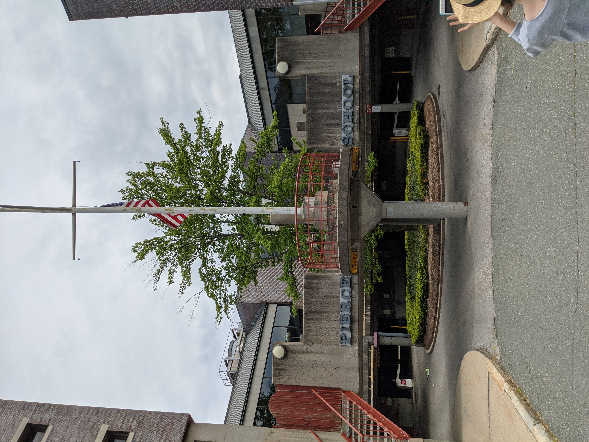
5 アパート
Brooklineのアパートは古くて、家賃が高くて、アメリカ基準では狭い物件が多いように思います。日本のいわゆる賃貸マンションは築30年にもなると家賃がだいぶ下がりますが、この辺りでは古いアパートをメンテナンスしながら長く住み続け、古さと家賃はあまり関係がありません。
これらのアパートは築100年くらいかな。 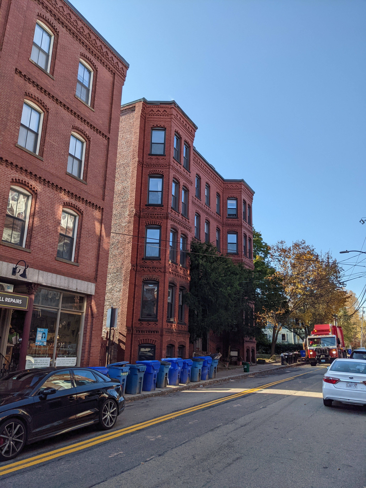
古いアパートは味があって好きな人は好きだと思いますが、大抵の場合、いろいろなところにガタが来ています。一言で言うと「建付けが悪い」になりますが、窓が開かない、落ちてくる、ブラインドが固定できない、収納スペースの扉がきっちり閉じない、蛇口が水漏れする、床が傾いている、床や天井が薄くて足音が響く、インターフォンが機能しない、あたりは私も経験しています。隙間風や虫が入ってくる、というのも聞きます。
一般的にアメリカでは、アパートの修理をお願いしてもなかなか来てくれないし、修理しても適当だしと、人によってはかなりストレスが貯まると思います。古いアパートに住むにはある程度の寛容さが必要です。
以前住んでいたアパートが入っている、築100年弱の建物。 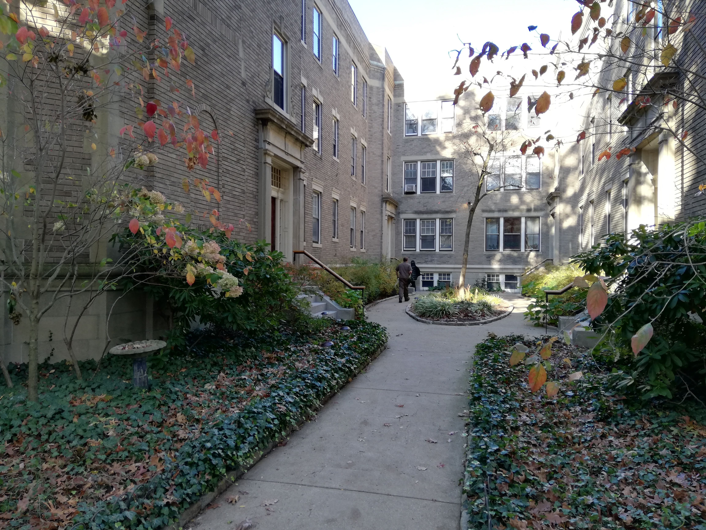
洗濯機は共用で有料なことが多いです。コンロは電熱線のタイプが一番多く、次いでガス、IHは少数派と思います。エアコンは窓据え付けのタイプが一般的です。エアコンの無いアパートも結構多く、私は去年と今年の2年間、エアコン無しで過ごしましたが、35度以上になる日が毎年数日はあって、きつかったです。
私が見学した内の半分くらいは、トイレやシャワーがあまりきれいではありませんでした。きれい好きな日本人には耐えられないレベルで汚れている物件もいくつかありました。
モダンな外観の建物。これで築50年くらいかな。残念ながら、部屋のメンテナンスがいまいちでした。

広さは70〜90平米が平均的で、日本と同じか若干広めでしょうか。
それでいて、2ベッドルームアパートの家賃が月に$2500〜$4000もするのです。高級賃貸マンションのような家賃です。アパート自体の質というより、環境(安全性や教育レベル、利便性)にお金をかけるということなんですね。
きれい好きな日本人としては、たまに市場に出てくる、きちんとメンテナンスされていて、水回り含めてきれいな物件を狙うとよいと思います。
いろいろとネガティブなことを書きましたが、文化的で歴史あるBrooklineに住むことは、生活をとても豊かにしてくれます。ボストンに来られる方は、金銭的に多少無理をしてでもBrooklineに住むことを検討していただけるとうれしいです。
6 スポットの紹介
6.1 Coolidge Corner駅周辺
グリーンラインという地下鉄(のCライン)はボストンを出てBrooklineに入ると地上に出て路面電車になり、10分ほど乗っているとこの駅に着きます。Brooklineで一番栄えています。レストランやバー、映画館、カフェ等の店があって、散歩しているだけで楽しいです。郵便局、銀行、UPS(宅配業者)、CVS(ドラッグストア)、スーパーマーケット等も揃っていて、生活するにも便利なところです。
Coolidge Cornerの写真に大抵写っているランドマーク的なS.S.Pierceビル。 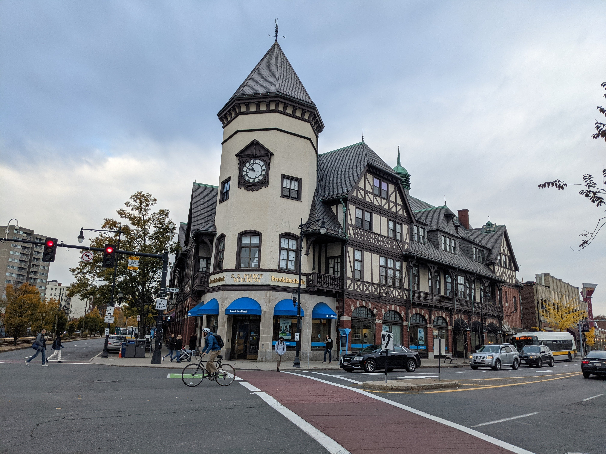
レトロな雰囲気のCoolidge Corner Theater。 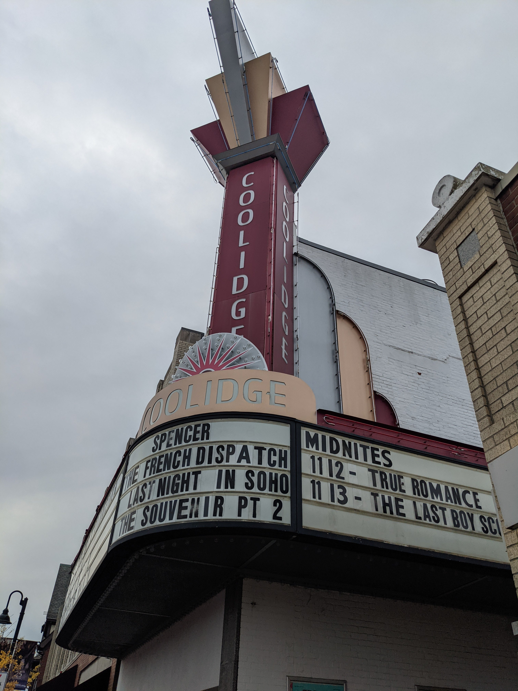
6.2 Brookline Village駅周辺
グリーンラインDラインにある駅です。Coolidge Cornerから南に歩いて15分くらいの所にあり、どちらかと言うと行政の中心地はこちら側です。図書館、警察、タウンホール、消防署等があります。レストランやカフェも多く、レストランの質ではCoolidge Corner周辺よりも上かもしれません。繁華街は若干こぢんまりしています。
Harvard Square周辺。 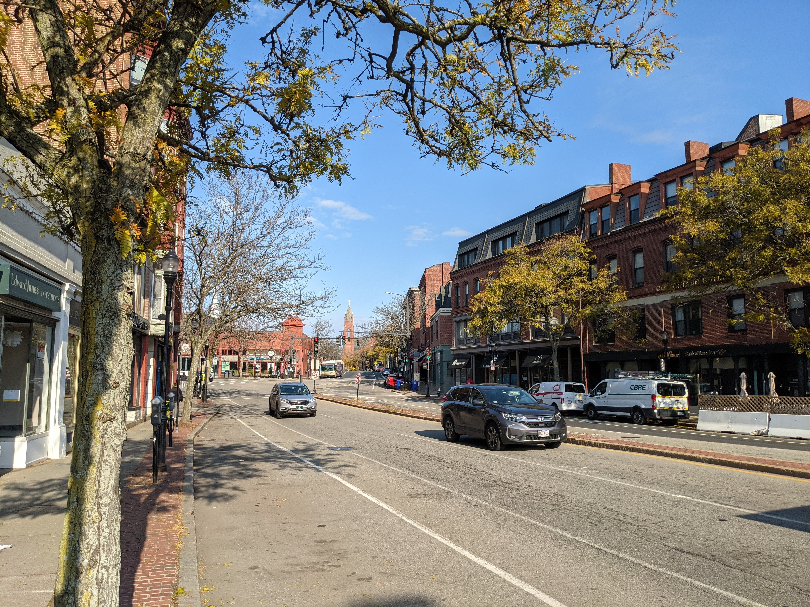
歴史が感じられる、郵便局(USPS)の入っているビル。 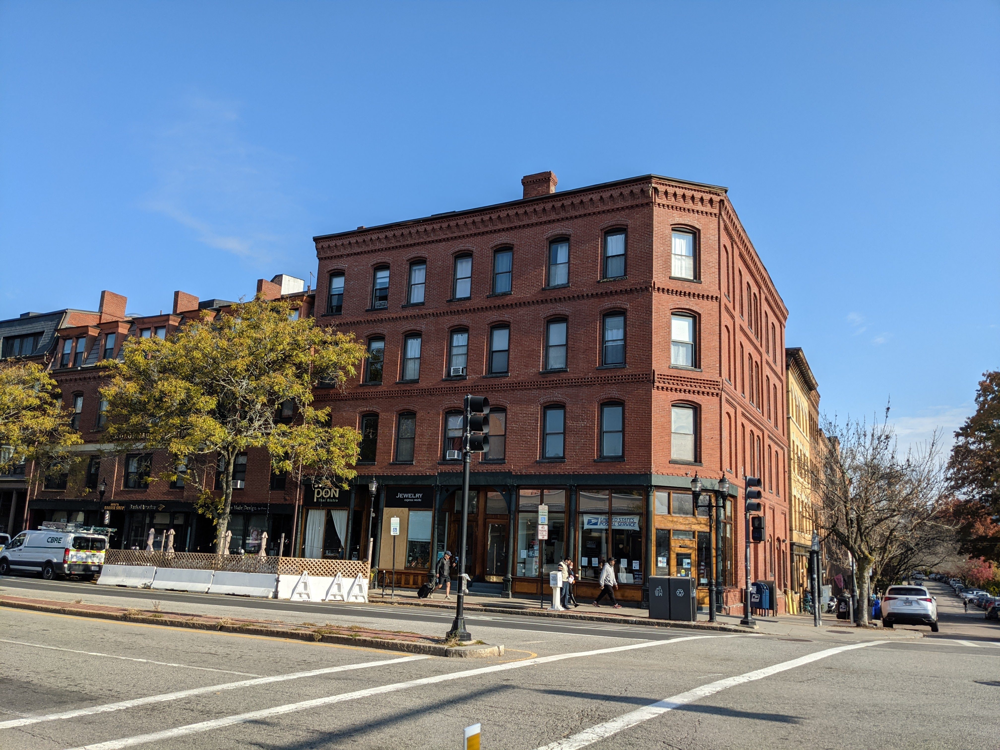
これもなかなか立派な消防署。 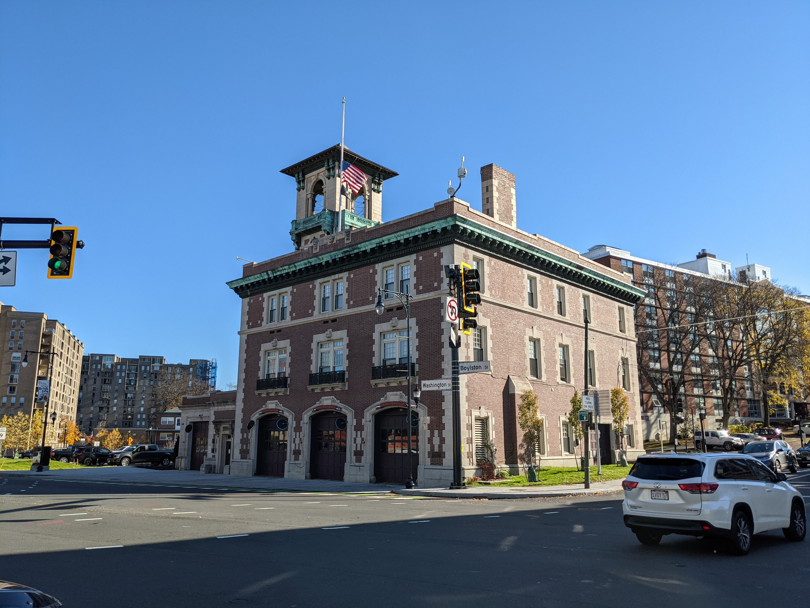
Brookline Villageの商業ビルは赤レンガ造りのhistoricな建物が多い印象です。
6.3 Public Library of Brookline
Brookline Villageにあるブランチがすごく立派です。こういう所に、アメリカの底力というか、懐の深さを感じます。学校帰りに友達と宿題をしたり、もちろん本を借りたり、子供がいつもお世話になっています。
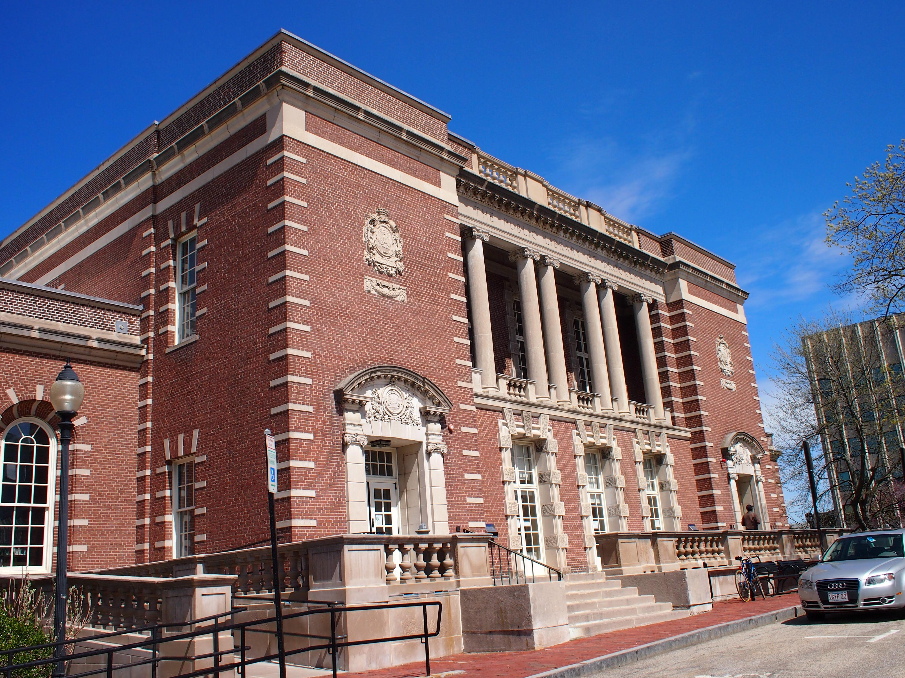
ここに限りませんが、アメリカの図書館はオンラインで電子書籍が借りられます。Kindleフォーマットもあります。もちろん、貸出期限がすぎると読めなくなります。
6.4 Maruichi Japanese Food & Deli
待望の日系スーパーマーケットがCoolidge Cornerにやってきました。まるいち最高です。米、味噌、さしみ、牛豚の薄切り、お茶、うどん、大葉、梅干し、油揚げ、里芋、納豆、日本のお菓子、etc.大抵のものはここで揃います。
まるいちが来るまでは、Burlingtonの韓国系スーパーH-Martまで買い出しに行っていましたが、やはり日系と韓国系は違います。まるいちの方が魚や野菜が新鮮で、品物の値付けも同じかかえって安いのです。
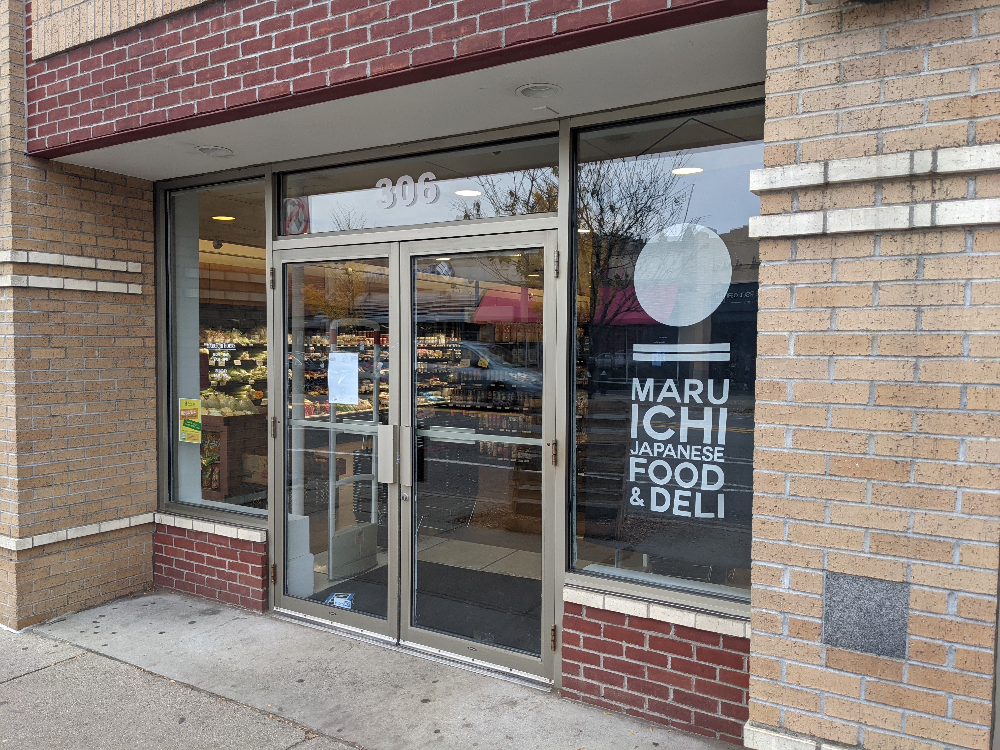
6.5 ケネディの生家
Coolidge Cornerから北に歩いていき、右に曲がってすこし行くとJFKの生家があり、観光スポットになっています。それほどお金持ちの家という感じではなく、普通の家なのであっと言う間に見終わってしまいます。
現在Covidのためにクローズしているようです。6年くらい前の写真ですが。 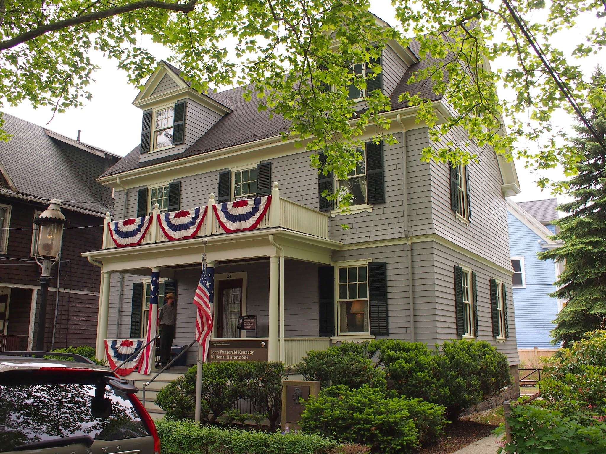
6.6 Brookline Booksmith
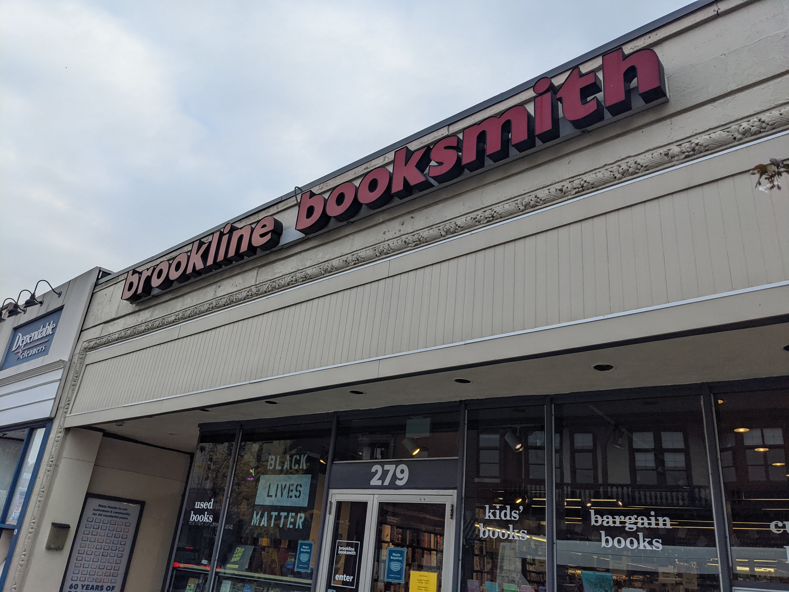
Coolidge Corner駅すぐ近くにある、地元の本好きに愛されている本屋さんです。品揃えが若干マニアックで、次に読みたい本を探すのに最適です。私も散歩のついでに寄り、つい長居してしまいます。子供向けの本も豊富で、友達の誕生日プレゼントとしてここのギフトカードを贈ることもあります。
ブッククラブを主催したり、著者による朗読イベントを開催したりと、本業以外の活動にも熱心です。
6.7 Trader Joe's
別にスポットではありませんが、私が毎週買い出しに通っているオーガニックスーパーマーケットです。Coolidge Corner駅前にあります。オーガニックスーパーとは言っても、Whole Foods Marketほど高くなく、Stop&Shop等の一般スーパーと同じくらいの価格設定です。その分、フルーツや肉、魚など生鮮品の質はWhole Foodsに負けています。
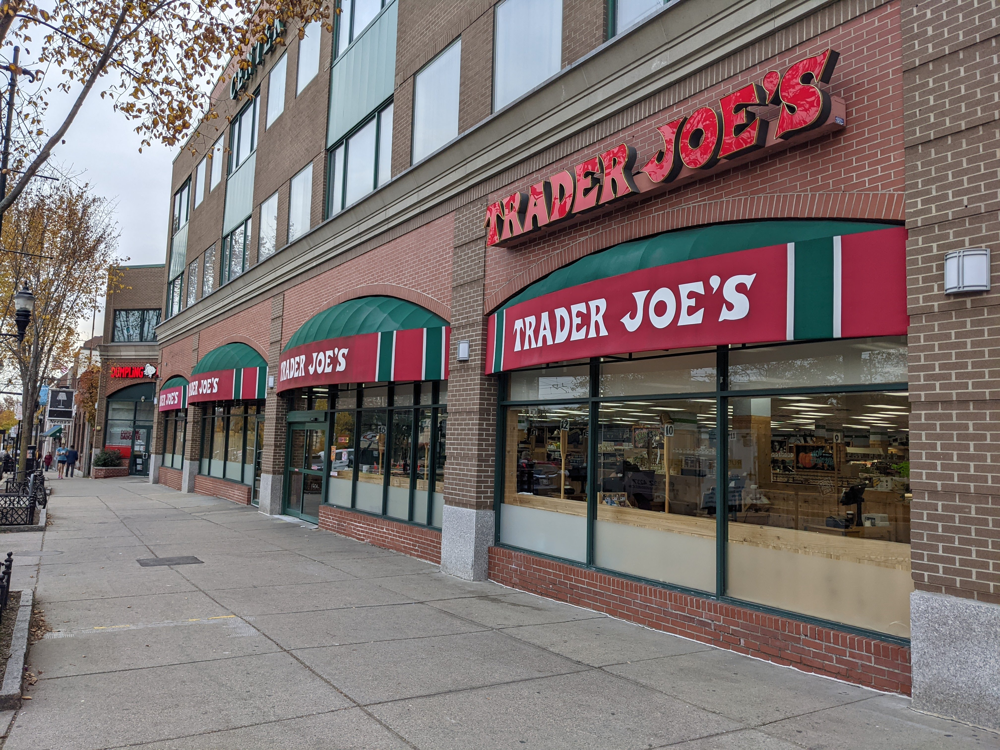
独自ショップブランド商品の開発に熱心で、逆に一般的な定番商品は扱っていません。在米日本人の間でカルト的な人気を誇ります。店員は皆フレンドリーで、多少宗教がかっている気もします。うれしいことに、このCoolidge Corner店では酒類を扱っていて、私はいつもここでワインやビールを買っています。
最近になって、リピートしていた生ホタテパックやチンゲンサイの取り扱いを止めてしまい、豚ひき肉やインスタントコーヒー等の品切れも多く、我が家での利用価値が若干低下傾向です。